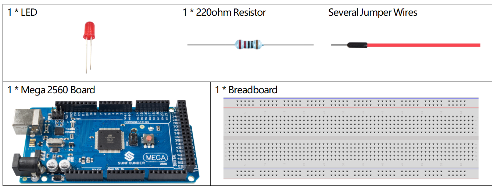
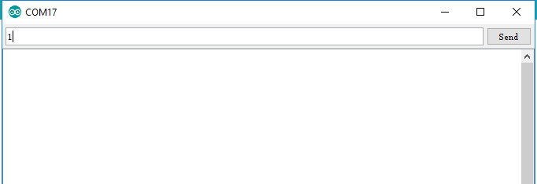
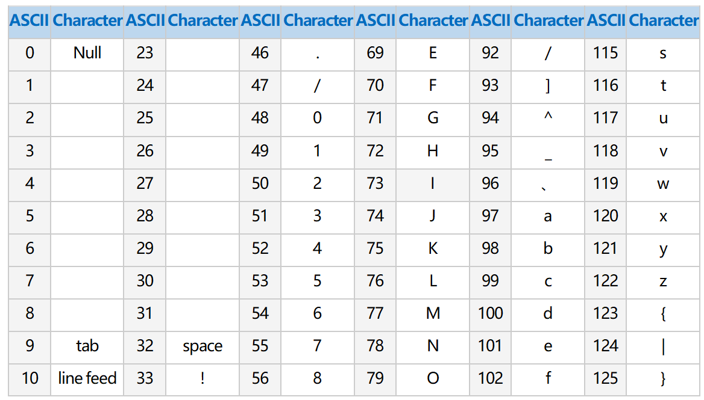
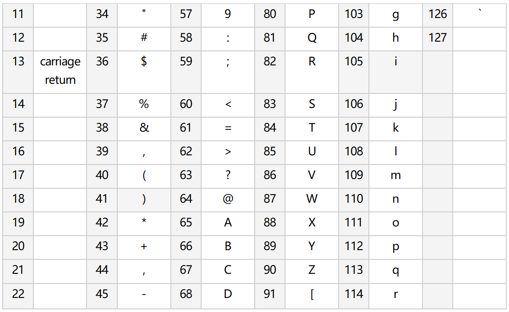

1.8 Serielles Lesen¶
Überblick¶
Neben dem Lesen von Daten aus elektronischen Bauteilen kann die Mega2560-Karte auch Daten lesen, die im Monitor der seriellen Schnittstelle eingegeben wurden, und Sie können Serial.read () als Controller für Schaltungsexperimente verwenden. Dann verwenden wir LED, um mit der Seriennummer zu experimentieren. Read () - Anweisung zur Steuerung der LED zum Ein- und Ausschalten.
Erforderliche Komponenten¶
Bemerkung
Informationen zur Hardware finden Sie in Teil 2.
Fritzing Circuit¶
In diesem Beispiel verwenden wir den digitalen Pin 9, um die LED anzusteuern. Wenn 1 in den seriellen Monitor eingegeben wird, leuchtet die LED auf. Wenn 0 eingegeben wird, erlischt die LED.

Schematische Darstellung¶

Code¶
Nachdem die Codes auf die Mega2560-Karte hochgeladen wurden, schalten Sie bitte den Monitor für die serielle Schnittstelle ein. Wenn Sie „1“ eingeben, wird die LED eingeschaltet, und wenn Sie „0“ eingeben, wird sie möglicherweise ausgeschaltet.
Code-Analyse¶
Deklarieren Sie den digitalen Pin 9 als LEDPin.
const int ledPin = 9;
Serial.read () liest ein einzelnes Byte des ASCII-Werts. Daher müssen Sie eine Variable vom Typ int, incomingByte, deklarieren, um die erfassten Daten zu speichern.
int incomingByte = 0;
Führen Sie die serielle Kommunikation in setup () aus und stellen Sie die Datenrate auf 9600 ein.
Serial.begin(9600);
Stellen Sie ledPin auf den OUTPUT-Modus.
pinMode(ledPin,OUTPUT);
Der Status des seriellen Port-Monitors wird in loop () beurteilt, und die Informationsverarbeitung wird nur ausgeführt, wenn die Daten empfangen werden.
if (Serial.available() > 0){}
Liest den Eingabewert im Monitor der seriellen Schnittstelle und speichert ihn in der Variablen incomingByte.
incomingByte = Serial.read();
Wenn das Zeichen ‚1‘ erhalten wird, leuchtet die LED; Wenn ‚0‘ erhalten wird, erlischt die LED.
if(incomingByte=='1'){digitalWrite(ledPin,HIGH);}
else if(incomingByte=='0'){digitalWrite(ledPin,LOW);}
Bemerkung
Nimmt den ASCII-Wert in einem einzelnen Zeichen an. Wenn Sie also ‚1‘ eingeben, ist der erhaltene Wert nicht die Zahl ‚1‘, sondern das Zeichen ‚1‘, dessen entsprechender ASCII-Wert 49 ist.
※ ASCII-Diagramm¶
Die ASCII-Codierung (American Standard Code for Information Interchange) stammt aus den 1960er Jahren. Es ist die Standardmethode, mit der Text numerisch codiert wird.
Beachten Sie, dass die ersten 32 Zeichen (0-31) nicht druckbare Zeichen sind, die häufig als Steuerzeichen bezeichnet werden. Die nützlicheren Zeichen wurden beschriftet.
 Phänomen Bild¶